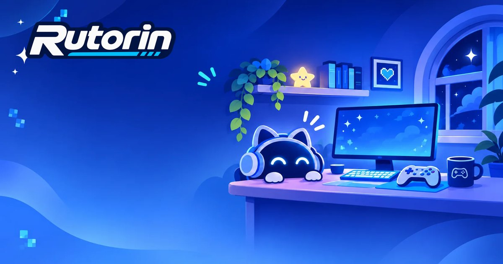

[Devlog #02]
[Título do post]
[Resumo de 1 ou 2 frases. Aparece no Google, com até ~155 caracteres.]

[Parágrafo de abertura: em 2 ou 3 frases, diga do que o post trata e por que vale a pena ler. O Google e o leitor decidem aqui se continuam.]
[Primeiro subtítulo: use palavras que alguém digitaria no Google]
[Texto. Parágrafos curtos, de 2 a 4 frases, funcionam melhor na tela.]
[Segundo subtítulo]
[Texto com destaque e um link se precisar.]
- [Item de lista]
- [Item de lista]

// [Bloco de código, se o post tiver]
console.log("Olá, Rutorin!");[Conclusão]
[Feche o post com o principal aprendizado e diga o que vem no próximo.]